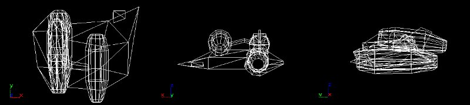
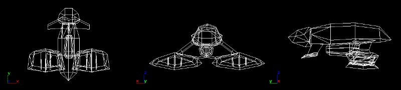
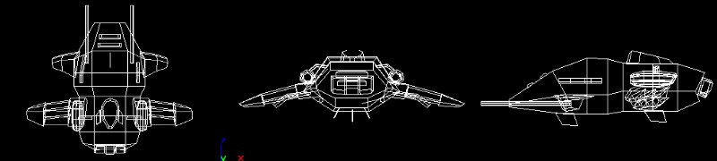
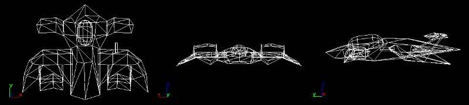
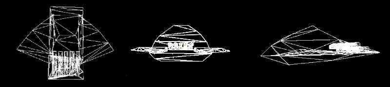
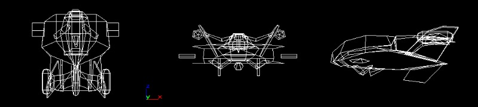
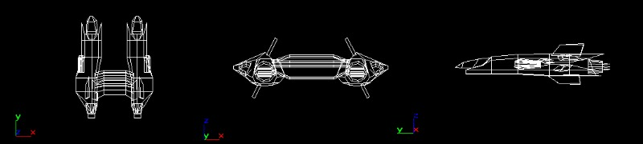
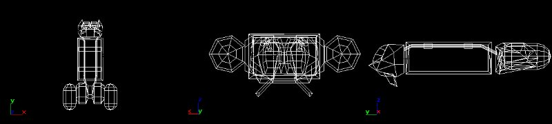
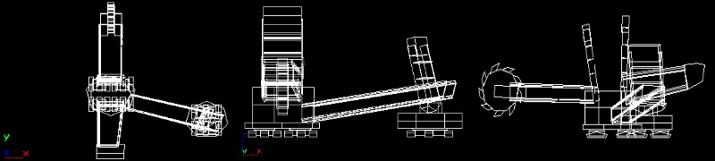
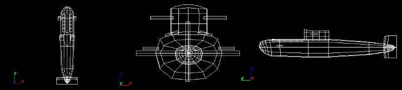

U.E.S
Far dé Lànce Industries L3 "Enfin Revêtir"

Far dé Lànce
was founded by the UES for developing naval military equipment in 2008
and features former Renault and Dassault engineers. The Enfin Revêtir
is a sturdy, well armored fighter that can resist high pressure thanks
to its voluminous, yet elegant design. The dual-drive concept might look
odd at first but provides the ship with enough thrust to break the 100
KTS mark. There are four weapon hardpoints available which make this craft
the nearly perfect choice for almost any type of duty. Additionally, the
strong headlight beam proves considerably helpful in any deep-sea environment.
British Aerospace AX-10 "Cobra"

The AX-10 Cobra is the latest
model of British Aerospace´s submarine series. A tad larger than
the french "Enfin Revêtir", it is not as maneouverable, but approximately
equally fast thanks to the two large Triple-fan induction drives. The greater
size allows for large fuel tanks that enable the Cobra to travel long distances
at high speed, as well as good armor, which makes the Cobra the perfect
ship for strategic assaults.
Far dé Lànce Industries L7 "Akira"

Originally based on blueprints
of a deep-sea research vessel by Mitsubishi, the Akira hosts a large Cargo
Bay that should provide enough room for one of the Extraterrestrian Seafloor
Stations. The Akira serves as a mothership for all U.E.S. diving operations.
Its sturdy design allows for incredible diving depths and relatively good
armor. On the negative side, the engines are not strong enough to make
the L7 capable of high speeds or swift movement. Moreover, the Akira is
unarmed and must therefore be protected by escorting crafts.
U.S.A
Lockheed DF1 "Protector One"

The design of Lockheed´s
approach eludes us, it appears more like an airplane than a deep-sea submarine.
Reconaissance suggests that it might serve as a prototype for the US development
of a stealth submarine, but this is uncertain. The flat shape is assumed
to be very problematic at high water pressure, so armoring is suspected
to be low. However, intelligence reports that the Protector One boasts
high maneouverability and top speeds in excess of 100KTS.
Pratt & Whitney X-23 "Freelancer"

The Freelancer is the derivate
of a deep-sea research submarine the US have previously used for probing
for mineral resources on the seafloor. High resistance against atmospheric
pressure and tough armoring excel the X-23. Along with it 10 independent
induction drive tubes, this vessel is very sturdy and a considerable threat.
Its two strong headlight beams should make locating this ship an easier
task, though.
General Dynamics S-14 "Introspective"

The Introspective's design
is based on classic research vessels, which makes this craft a very reliable
sub. Considering its field of duty as a fighter, the S-14 is surprisingly
well armored and highly resistable against atmospheric pressure. The greater
weight limits maneouverability and maximum speed a tad though, but this
does not make this ship any less of a threat. It is mainly used for strategic
assaults or convoy escorts.
Boeing B-5 "Pareil"

Boeing's Pareil is the underwater
counterpart to their aerospace designs - a strategic bomber armed with
dumb or homing torpedoes which pose a great threat to less maneouverable
crafts like the Akira. The design features two fuselages and cockpits:
The navigator / pilot is located on the left, the weapon C.O on the right.
Following the tradition of Boeing's airplanes, the Pareil boasts very high
top speed, but relatively poor armor. Expect this ship mainly on duty on
strategic assaults.
Bell KDX 125 "Broadliner"

One of the US deep-sea scale
diving operations transport ship. The Broadliner features a rather simple
but efficient design that is assumed to cope with high atmospheric pressure
well. It is often used for transporting equipment to and from US deep-sea
bases. Although velocity is not very high due to the weak drives and the
bulky shape, armoring is very tough, making the Broadliner not quite an
easy target since it will be usually well guarded, too.
Siemens / MAN / Krupp Paddlewheel Excavator 288 "Garzweiler"

Interestingly enough, the
Garzweiler is of German origin and has been used since the 1960s for browncoal
open-cast mining in the Ruhrpott/Germany. The U.S. bought a small number
of excavators in 2003 for underwater excavations in search for mineral
resources. We suspect that the USA might use those incredible devices to
dig for the ESS nowadays. The sheer size of a Garzweiler is amazing: With
a height of 97 meters and a total length in excess of 300 meters, it is
the largest excavator ever built by mankind.
U.S.S. Typhoon Class Attack Sub

The Typhoon Submarine is
a proven construction ever since the 1990s. Over the years, the construction
concept has been reworked several times and the ships have been overhauled
and fitted with the latest avionics and electronic gadgetry.
With the arrival of small
submarine fighters like the Enfin Revêtir, the Protector One and
others, a Typhoon sub does not play a significant role in underwater combat
anymore, but it surely still is an extremely deadly threat for conventional
vessels like Tankers or Battleships, especially if armed with nuclear warheads.